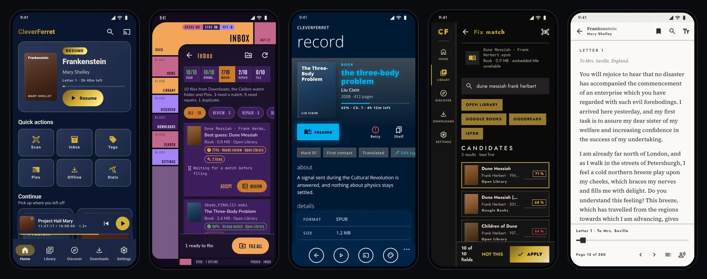
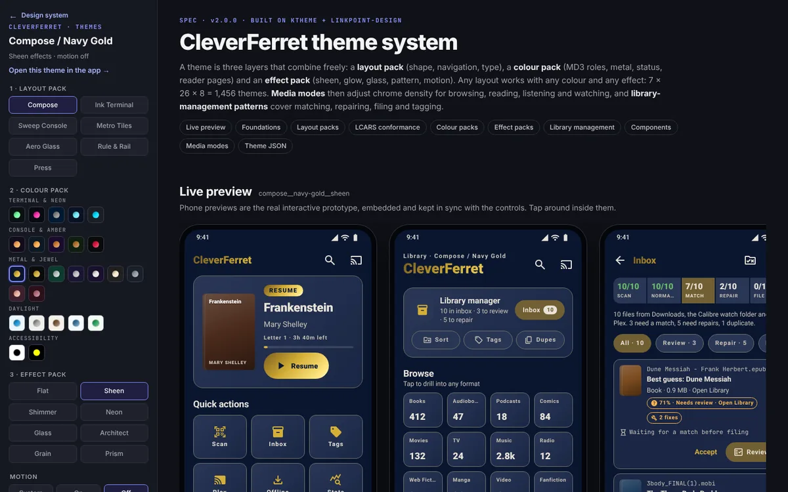

App prototype
Twenty navigable screens with real state: playback and queue, reader with page colours and type size, video, stats, onboarding, and a Theme Studio that previews before it applies.
Launch the prototype →A themeable interface for books, audio, comics, podcasts, film and web serials that catalogues like Calibre and files like Plex. Explore the working phone app, then inspect the tokens, components and library-management patterns behind it.

Everything is static HTML driven by one token module,
cf-system.js, and one component stylesheet,
cf-ui.css.
Twenty navigable screens with real state: playback and queue, reader with page colours and type size, video, stats, onboarding, and a Theme Studio that previews before it applies.
Launch the prototype →
Layout, colour and effect packs, foundations, a WCAG audit of every pack, LCARS conformance notes, components and portable theme JSON.
Open the theme spec →An import inbox that matches against metadata sources, repairs badly formatted files, renames to server-ready paths and tags with provenance. Covers Fix match, File repair, Sort rules and Tag explorer.
Open the import inbox →All nine plugins in Kaleaon/calibre_plugins keep their logic free of calibre and Qt, so it can run on-device under Python with a small calibre shim, behind mobile screens built from a manifest.
Read the feasibility note →The rules every screen, pack and component follows.
Layout, colour and effect packs combine freely. A layout never locks a palette, and a palette never decides navigation.
Each pack has one four-stop brush (shadow, base, highlight, shimmer), used only on the wordmark, primary CTAs, chips and progress.
The reader canvas never gets pattern, grain or glow. Video drops every effect except the progress and focus accent.
Matches are confidence-gated, repairs are reversible, and filed paths follow Calibre's library layout or Plex and Jellyfin naming, so servers scan them first time.
Every pack is corrected to WCAG 2.2 AA, primary used as text is lifted to 4.5:1, status is never colour alone, motion follows the system, and there are E-Ink and High Contrast packs.
Packs that quote a visual canon say where they break it. Sweep Console lists each LCARS deviation and the reason it is kept.
Each swatch shows the pack's background and metal brush. Select one to open the app in that pack.
The palette list needs JavaScript. The full set is in the theme spec.
Every prototype screen and the source it was built from in
Kaleaon/CleverFerret
(paths under
CleverFerret/src/main/java/com/universalmedialibrary/).
| Screen | Source |
|---|---|
The screen map needs JavaScript. See
design-notes/sync-log.md.
|
|